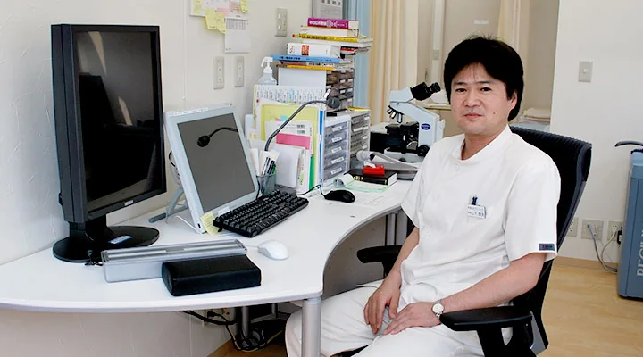
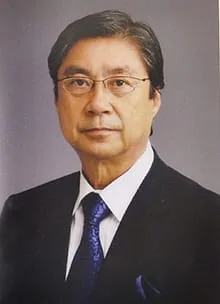

院長
山下 康夫
やましたクリニックは、西武立川駅近くで地域の皆様の診療を行っています。日本医科大学を卒業後、心臓血管外科では循環器疾患、血管疾患を、外科では、消化器疾患、呼吸器疾患、乳腺疾患、甲状腺疾患を主に経験しました。また、形成外科では、外傷、熱傷、皮膚疾患等を経験してまいりました。
今までの経験を生かし、何でも相談できるかかりつけ医として、地域の皆様の健康に寄与できるよう努力いたしますので、よろしくお願いいたします。
略歴
- 1991年日本医科大学 卒業
日本医科大学付属病院 形成外科 勤務
形成外科、皮膚科を診療後、関連病院にて、一般外科、消化器外科を診療 - 1995年日本医科大学武蔵小杉病院 外科心臓血管外科 勤務
心臓血管外科を主に、呼吸器外科、乳腺外科、内分泌外科を診療 - 2008年立川市にて、やましたクリニック 開院
資格
- 日本外科学会認定外科専門医
- 身体障害者福祉法指定医(心臓機能障害)
所属学会
外科
- 日本外科学会
- 日本胸部外科学会
- 日本心臓血管外科学会
内科
- 日本内科学会
- 日本循環器学会
- 日本心エコー図学会
- 日本超音波医学会
- 日本超音波検査学会

略歴
- 1973年日本医科大学医学部 卒業
日本医科大学付属第一病院第2外科 入局 - 1978年日本医科大学大学院医学研究科 修了（第一病理）、医学博士
- 1980〜82年米国Duke大学外科留学
- 1989〜90年米国Harvard大学Joslin Clinic 留学、Washington大学外科 留学
- 1990年日本医科大学第2外科 講師
- 1996年日本医科大学第2外科 助教授
- 1999年日本医科大学第2外科 教授
- 2003年日本医科大学第2外科（内分泌外科・心臓血管外科・呼吸器外科）主任教授・内分泌外科部長
- 2012年日本医科大学大学院医学研究科内分泌外科大学院教授・内分泌外科部長・（内分泌外科・心臓血管外科・呼吸器外科）統括責任者
- 2014年日本医科大学名誉教授・非常勤嘱託医
資格・認定医など
- 小山記念病院 顧問
- 日本外科学会認定指導医
- 日本外科学会認定外科専門医
- 日本甲状腺外科学会認定内分泌外科専門医
- 日本甲状腺学会認定専門医